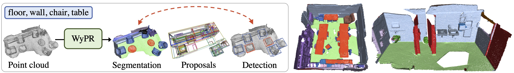

3D Spatial Recognition without Spatially Labeled 3D
Zhongzheng Ren Ishan Misra Alexander G. Schwing Rohit Girdhar
Facebook AI Research (FAIR) UIUC
IEEE/CVF Conference on Computer Vision and Pattern Recognition (CVPR), 2021
Paper | Code | Slides | Blog (Facebook AI) | Bibtex | Poster

Abstract
We introduce WyPR, a Weakly-supervised framework for Point cloud Recognition, requiring only scene-level class tags as supervision. WyPR jointly addresses three core 3D recognition tasks: point-level semantic segmentation, 3D proposal generation, and 3D object detection, coupling their predictions through self and cross-task consistency losses. We show that in conjunction with standard multiple-instance learning objectives, WyPR can detect and segment objects in point cloud without access to any spatial labels at training time. We demonstrate its efficacy using the ScanNet and S3DIS datasets, outperforming prior state of the art on weakly-supervised segmentation by more than 6% mIoU. In addition, we set up the first benchmark for weakly-supervised 3D object detection on both datasets, where WyPR outperforms standard approaches and establishes strong baselines for future work.
CVPR video
Method
Approach Overview. A backbone network extracts geometric features which are used by the segmentation head to compute a point-level segmentation map. The segmentation map is passed into the 3D proposal generation module Geometric Selective Search (GSS), and the resulting proposals along with original features are used to detect 3D object instances. Through a series of self and cross-task consistency losses along with multiple-instance learning objectives, WyPR is trained end-to-end using only scene-level tags as supervision.
Visualization of the WyPR results. We show the qualitative comparison between ground-truth labels and our predictions. We show both detection and segmentation results for the same scene.
Geometric Selective Search (GSS)
GSS Overview. Our algorithm takes as input the point cloud and detected planes (left column). It then hierarchically groups the neighboring planes into sub-regions and generates 3D proposals for the combined regions (middle column). We run the algorithm multiple times with different grouping criteria to encourage high recall of final output proposals (right column).
Visualization of the GSS computed proposals. Top three rows show all the computed 3D proposals, from which we observe that the proposals are mainly around object areas. The bottom four rows show the proposals which best overlap with ground-truth boxes. GSS generates 3D proposals with great recall for various objects in complex scenes.
Related Work
C. R. Qi, O. Litany, K. He, and L. Guibas Deep Hough Voting for 3D Object Detection in Point Clouds. CVPR 2020.
J. Wei, et al., Multi-path region mining for weakly supervised 3d semantic segmentation on point clouds. CVPR 2020.
Z. Qin, J. Wang, and Y. Lu Weakly supervised 3d object detection from point clouds. ACM MM 2020.
Z. Ren, et al., Instance-aware, Context-focused, and Memory-efficient Weakly Supervised Object Detection. CVPR 2020.
Acknowledgement
This work is supported in part by NSF under Grant #1718221, 2008387 and MRI #1725729, NIFA award 2020-67021-32799. We thank Zaiwei Zhang and the Facebook AI team for helpful discussions and feedback. We also thank the SPADE folks for the webpage template.